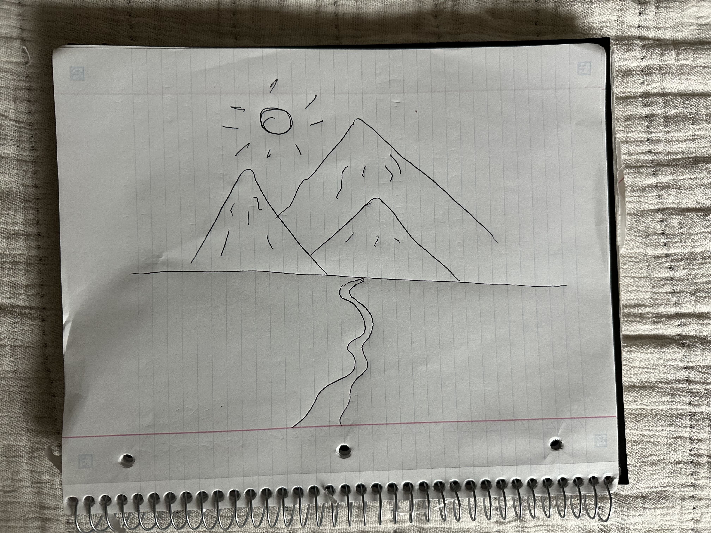

Rubric features included: point, triangle, circle, RGB sliders, size slider, circle segment slider, click and drag drawing, clear button, picture button, and an awesomeness feature: undo.
Replace this with your own hand-drawn reference image for the rubric.
